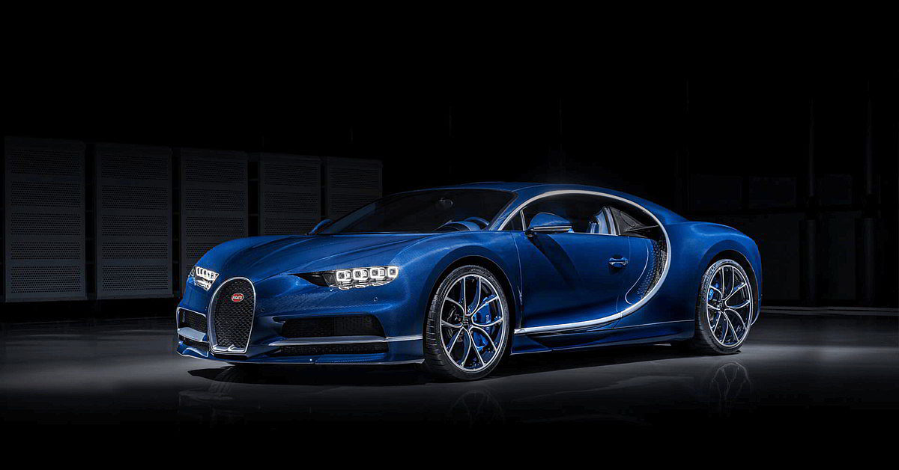

Bugatti
La Bugatti è una casa automobilistica francese, nota principalmente per le sue vetture sportive nonché per quelle d'anteguerra. Fondata nel 1909 dall'emigrato italiano Ettore Bugatti, cessò inizialmente le sue attività nel 1963. Dal 1987 i diritti del marchio vennero acquistati da Romano Artioli che ne riprese la produzione costituendo la società italiana Bugatti Automobili, la quale nel 1995 cessò a sua volta ogni attività. Dal 1998 Bugatti è un marchio del gruppo tedesco Volkswagen Aktiengesellschaft che ha creato ad hoc una società finanziaria denominata Bugatti Automobiles.
I primi esemplari di Bugatti sono considerati i due modelli progettati e costruiti dall'italiano Ettore Bugatti tra il 1900 e il 1901, con l'aiuto finanziario del padre Carlo e della famiglia Gulinelli di Ferrara. Conosciuti come Bugatti-Gulinelli Type2, ne furono prodotti probabilmente solo due esemplari e uno di questi vinse il GP di Milano del 1901, permettendo a Ettore di essere notato dall'alsaziano de Dietrich. La casa attuale invece nacque nel 1909, quando Ettore Bugatti la fondò a Molsheim, in Alsazia – al tempo territorio tedesco, ma per convenzione l'azienda viene da sempre classificata come francese essendo tale regione tornata alla Francia dopo il trattato di Versailles –, dopo aver lavorato per la Mathis e per la Deutz AG. La Bugatti si fece notare immediatamente per la bellezza delle vetture, leggere e sportive che ebbero pure buoni risultati in alcune competizioni. Nonostante ciò, per i primi trent'anni si continuò a utilizzare lo stesso schema per il telaio e si rifiutarono alcune innovazioni, tra cui la sovralimentazione, i motori a sei cilindri e gli alberi a camme in testa. Il primo modello fu la Tipo 13 Brescia che venne prodotta dal 1910 al 1926 seppur con diverse cilindrate; seguirono la Bugatti Tipo 35 dal 1922 al 1935 e la Tipo 37. Nel 1923 la casa partecipò al Gran Premio di Francia a Tours con la Bugatti Tipo 32 "Tank" ma le vetture presentarono gravi inconvenienti di tenuta stradale. Per la 500 miglia di Indianapolis, invece, si decise di schierare una Tipo 35 rimaneggiata dal progettista di aerei da caccia Becherau, ma anch'essa manifestò alcuni problemi legati alla lubrificazione. Fu dal 1925 in poi che la Bugatti iniziò a vincere regolarmente, in particolare nella Targa Florio, che dominò per quattro anni consecutiviLa monoposto di Formula 1 Tipo 251 del 1955
Nel 1926 la Bugatti vinse il Campionato del Mondo dei Grand Prix (titolo all'epoca riservato solo alle Case Costruttrici), affermandosi nei Gran Premi di Francia, Europa e Italia. Dopo la morte del figlio di Ettore, Jean, la casa perse lo splendore che l'aveva resa celebre nell'ambito delle corse. Uno dei modelli più famosi prodotti dalla Bugatti fu la Bugatti Tipo 41 Royale del 1927, progettata per essere venduta a regnanti e capi di Stato. Fu l'auto più costosa del suo periodo, ma non incontrò il successo sperato. Nel frattempo la casa aveva perso smalto: nelle competizioni era sfavorita dalla meccanica troppo classica e obsoleta delle sue vetture, e solo l'introduzione di doppi alberi a camme in testa e il riutilizzo dei propulsori della Royale nel campo ferroviario le evitarono il tracollo. Tuttavia all'inizio della seconda guerra mondiale la produzione venne arrestata e la Bugatti, malgrado i tentativi di ripresa dopo il conflitto, cessò di esistere negli anni cinquanta. Nel 1963 la Bugatti è venduta all'azienda iberica Hispano-Suiza che la rinominerà Messier-Bugatti; questa (oggi società del Groupe Safran) è tuttora attiva e produce componenti per l'aeronautica negli stabilimenti di Molsheim.